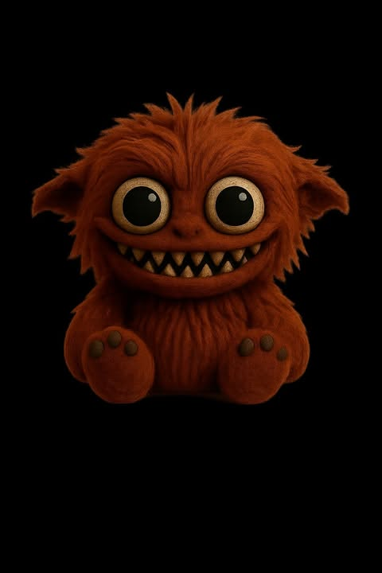

Grimmie

Silent watcher by the door. When bad shadows creep, Grimmie growls and they scatter like smoke.
Nyx

The quietest of them all. Nyx erases fear like chalk on a board. If you hear a whisper, “it’s nothing,” that’s Nyx calming the dark.
Reddox
Fiery as embers, Reddox sparks small flames in the dark. His glowing grin makes even nightmares crumble into dust.
Brownie

Warm as a blanket, Brownie sits by your pillow. When your eyes grow heavy, he twitches his nose — and dreams turn soft again.